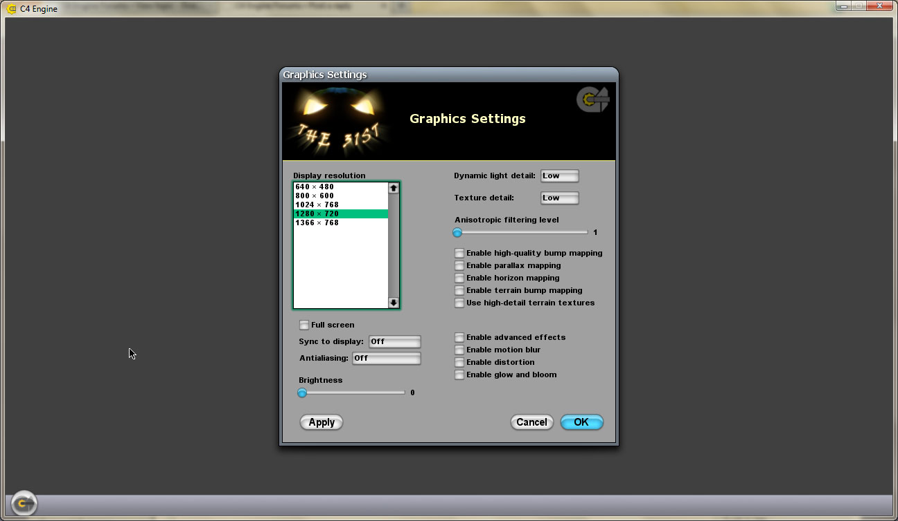
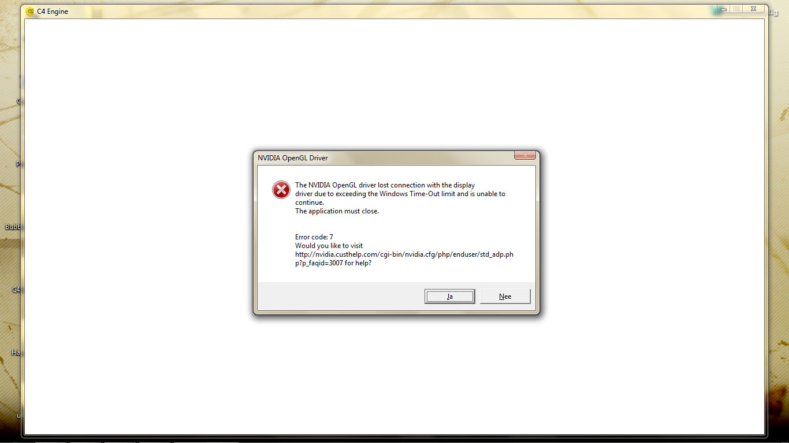

Hi there,
I downloaded the C4 Engine demo today and I ran into some trouble. When I play the demo(the actual game part) it crashes with an OpenGL lost connection message, sending me to this page.
The demo runs smooth for 30 seconds or so and then crashes without seeing any frozen screen before that happens. I tried lowering the settings to the minimum, turning on VSYNC, but to no avail. My second thought was that it could be a OpenGL driver problem, so I tried some different games using OpenGL(HoN, CS), but I couldn't get them to crash. This is also the first time I see this error, ever. Running the world editor seems to go well though.
I don't want to fiddle with my registry just yet, so I'm hoping there's a different solution to this. I'm running this on a laptop with Windows 7 64bit, Geforce GTS 360M, Intel I5 M430 and 4GB RAM.
Any information or help with this would be very much appreciated.
OpenGL message “lost connection”
Forum rules
Discussions in this forum must pertain to the C4 Engine in some way. Threads that discuss other engines, even if the intent is to compare to C4, are not allowed due to the likelihood of starting a flame war.
Discussions in this forum must pertain to the C4 Engine in some way. Threads that discuss other engines, even if the intent is to compare to C4, are not allowed due to the likelihood of starting a flame war.
10 posts
• Page 1 of 1
OpenGL message “lost connection”
 by Mussi » 21 Sep 2012, 09:30
by Mussi » 21 Sep 2012, 09:30
-

Mussi - Experienced User

- Posts: 113
- Joined: 21 Sep 2012, 08:59
Re: OpenGL message “lost connection”
 by zebeste » 21 Sep 2012, 10:02
by zebeste » 21 Sep 2012, 10:02
The first thing I think others here will suggest is to make sure your drivers up to date. Even though you don't have issues with other opengl games, it still might be a driver issue. If I remember right, C4 uses some less commonly used opengl extensions that those other games may not be utilizing.
- zebeste
- Power User

- Posts: 538
- Joined: 21 Jul 2007, 15:04
Re: OpenGL message “lost connection”
 by Eric Lengyel » 21 Sep 2012, 15:43
by Eric Lengyel » 21 Sep 2012, 15:43
This message means exactly one thing: the OpenGL driver crashed. This is not a problem with the C4 Engine, but with the Nvidia drivers. Please make sure that you have the latest drivers installed by going here:
http://www.nvidia.com/Download/index.aspx?lang=en-us
Also, the C4 Engine uses OpenGL in unique ways, so it's possible that it exposes bugs in the driver that you won't see in other games or engines.
http://www.nvidia.com/Download/index.aspx?lang=en-us
Also, the C4 Engine uses OpenGL in unique ways, so it's possible that it exposes bugs in the driver that you won't see in other games or engines.
-

Eric Lengyel - Terathon Employee

- Posts: 19108
- Joined: 09 May 2005, 19:00
- Location: Roseville, CA
Re: OpenGL message “lost connection”
 by Mussi » 22 Sep 2012, 05:04
by Mussi » 22 Sep 2012, 05:04
Thank you for your replies. I totally forgot to mention that I had the latest drivers installed, version 306.23 - WHQL. I'll try to revert back to an older version soon and see how that holds up.
-
Mussi - Experienced User
- Posts: 113
- Joined: 21 Sep 2012, 08:59
Re: OpenGL message “lost connection”
 by Mussi » 23 Sep 2012, 11:49
by Mussi » 23 Sep 2012, 11:49
So I tried it again with an older driver, 296.10, but that didn't help. As you can understand, this is kind of a deal breaker for me. Is there some way for me to pinpoint the problem and report this to NVidia? Or getting some insight on what functionalities I can and can't use(menu and world editor seem to be fine)?
-
Mussi - Experienced User
- Posts: 113
- Joined: 21 Sep 2012, 08:59
Re: OpenGL message “lost connection”
 by Eric Lengyel » 23 Sep 2012, 16:58
by Eric Lengyel » 23 Sep 2012, 16:58
Which demo level are you playing when the GPU hangs? What kind of frame rate are you getting? (You can open the command console with the tilde key and type "rate" to see the frame rate.) Does it still hang if you simply stand still at the beginning of the level?
Unfortunately, this is the only time we've ever heard of this particular problem happening when running C4, so we don't have much information about it. Your graphics hardware is also kind of uncommon, so that doesn't make it any easier, either.
Unfortunately, this is the only time we've ever heard of this particular problem happening when running C4, so we don't have much information about it. Your graphics hardware is also kind of uncommon, so that doesn't make it any easier, either.
-
Eric Lengyel - Terathon Employee
- Posts: 19108
- Joined: 09 May 2005, 19:00
- Location: Roseville, CA
Re: OpenGL message “lost connection”
 by MACK » 23 Sep 2012, 17:52
by MACK » 23 Sep 2012, 17:52
Also, please confirm, with a screenshot, your graphic settings. Thanks.
New C4 Book Here!
EVGA SR2 Mb @(2.4 to 3.4 Ghz), Intel E5620 dual cpu, 4x4GB ECC RAM, OS ADATA S511 256GB RAID10
Nvidia GTX660, Driver 320.49 WHQL Win7 64bit, DX SDK 6-10 skype ck_mack
EVGA SR2 Mb @(2.4 to 3.4 Ghz), Intel E5620 dual cpu, 4x4GB ECC RAM, OS ADATA S511 256GB RAID10
Nvidia GTX660, Driver 320.49 WHQL Win7 64bit, DX SDK 6-10 skype ck_mack
- MACK
- Community Leader
- Posts: 1672
- Joined: 05 Oct 2008, 01:53
- Location: Salisbury, NC USA
Re: OpenGL message “lost connection”
 by Mussi » 23 Sep 2012, 21:45
by Mussi » 23 Sep 2012, 21:45
Eric Lengyel wrote:Which demo level are you playing when the GPU hangs? What kind of frame rate are you getting? (You can open the command console with the tilde key and type "rate" to see the frame rate.) Does it still hang if you simply stand still at the beginning of the level?
Got some good news, it seems like it only crashes on Lost Cemetery, Island and Pond. So I guess it's related to the terrain engine. I'm getting about 60-70 fps and it crashes even if I simply stand still at the beginning. Sometimes it takes a minute or even longer, but if I'm unlucky it only takes a couple of seconds.
MACK wrote:Also, please confirm, with a screenshot, your graphic settings. Thanks.

I've tried a lot of settings, including different resolutions, full screen and different values for sync to display, but the problem seems to be related to the specific levels.
The error I'm getting:

-
Mussi - Experienced User
- Posts: 113
- Joined: 21 Sep 2012, 08:59
Re: OpenGL message “lost connection”
 by darkrider_1 » 26 Sep 2013, 19:35
by darkrider_1 » 26 Sep 2013, 19:35
I have an nvidia gts 360m and was also experiencing this issue a few days ago (I just purchased C4). I tried several older drivers to no avail. BUT... after installing the latest 327.23 (9-19-2013) driver from nvidia, ALL PROBLEMS ARE GONE! I run the exact same demo and no problems whatsoever! So in my case I have to say it was the driver.
- darkrider_1
- New User
- Posts: 5
- Joined: 23 Sep 2013, 22:56
Re: OpenGL message “lost connection”
 by BlindLuke » 30 Sep 2013, 01:01
by BlindLuke » 30 Sep 2013, 01:01
darkrider12 wrote:So in my case I have to say it was the driver.
This is driver definitely, which should not fail no matter how C4 uses OpenGL API.
-

BlindLuke - Experienced User
- Posts: 111
- Joined: 25 Feb 2010, 04:14
10 posts
• Page 1 of 1
Who is online
Users browsing this forum: No registered users and 3 guests
| Company | Contact | Privacy Policy | Site Map | Copyright © 2001–2015 Terathon Software LLC |  |